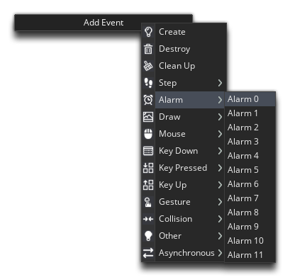
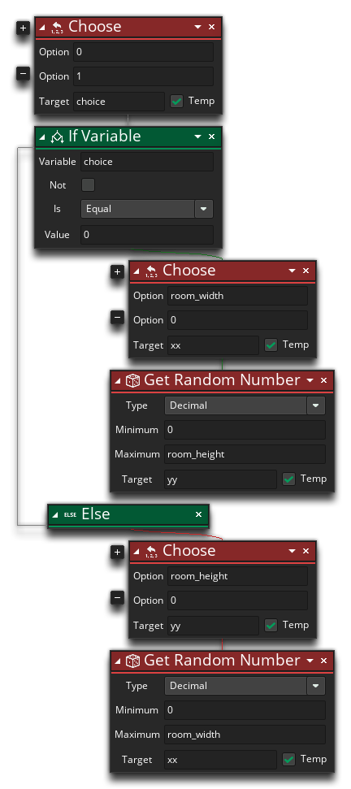
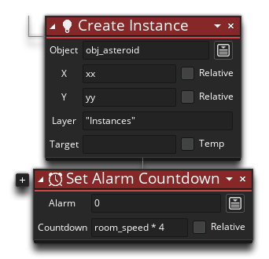
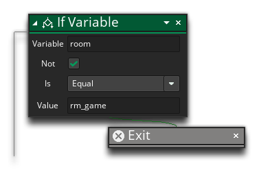

We now need to continue to create asteroids as the player progresses and destroys them, otherwise there'll quickly be no asteroids left for them to shoot at, so we'll use the Set Alarm Countdown action to trigger an Alarm Event, and in that we'll spawn more asteroids. An alarm is an event that will be triggered some time after it is set, and we'll set it to 60 so that an asteroid will spawn every second in the game.
So, before we leave the Room Start event of the object "obj_game", you want to add in one further action to set the Alarm 0 Event, positioned as shown in the image below:

With that done, we can add the Alarm 0 Event to the object now:

In this event, we're going to spawn the asteroids not in the corner of the room, but at the boundaries of the room. This will make it a lot less obvious to the player when they are created. For this to work we need to choose either a random position along the x-axis and a value for Y of either 0 or the room height, or a value of either 0 or the room width for X and a random value along the y-axis. The following actions do just that, so add them into the Alarm 0 event as shown:

We also need to add in the DnD™ to spawn the asteroid and also to reset the alarm so that it will loop and continually create asteroids:

To set the alarm we have used the room_speed global variable. This variable holds the number of steps the room will perform in a second (the game speed), which is what we set right at the start of this tutorial: 60FPS. So, by setting the alarm to 4 * room_speed we are setting it to trigger again in 4 seconds.
There is one problem with this event, however... Because the object "obj_game" is persistent and the alarm is always reset, we would end up with asteroids in rooms other than the game room, since the alarm will be running even after the player has won or lost. To avoid this, add these following actions at the start of the chain, before the actions shown above:

Ticking the "Not" flag in the above action is checking to see if something is not equal to the given value, so these actions are checking if the current room is not the game room, then the rest of the event will be skipped (the Exit action will end the event that it is called in immediately, so any code after it will not be run).
If you run the game now and wait a few seconds you should see that asteroids are spawning constantly around the room edges.
Click the "Next" button to continue...